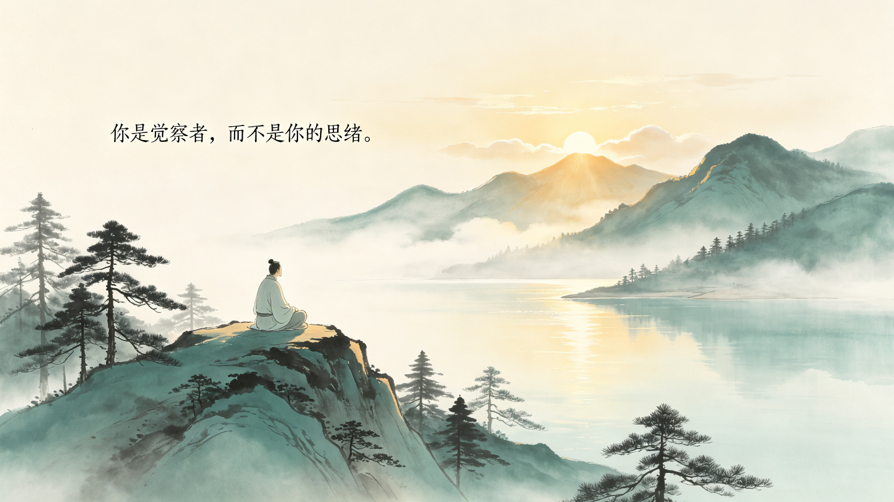
你不是你的头脑
第一章 · 开悟的最大障碍
以原书文字为骨架，按内容需要嵌入图片 · 音频 · 视频 · 互动
一次凌晨的觉醒
“我三十岁之前的生命，处在一个持续性的焦虑状态，其间穿插着自杀性的沮丧。”
某个凌晨，他被一个念头惊醒：“我活不下去了，我受不了我自己。”
然后他忽然看见了这个念头的荒诞——“我”和“我自己”，怎么会是两个？
第二天清晨，他听着窗外的鸟叫，第一次感到：光穿过窗帘，就是爱的本身。
你不是你的头脑
开悟的最大障碍，是对心智头脑的认同。四个小节，四步拆开它。
开悟——到底是什么？
先讲一个寓言。一个乞丐在路边行乞了三十年，一直坐在一口旧箱子上。
路人告诉他：“你屁股底下，就是一口装满黄金的箱子。”
“可是我不是乞丐呀。”
凡是还没找到内在宝藏的人，即使拥有庞大财富，也是乞丐。他们向外攀援，追寻肯定、安全感或爱。
这些念头都不是"你"——试着把它们一个个点掉，就像看云飘过。点掉 10 个，你就是念头的旁观者。
存在（Being），是当下就可以触及的最深的自我。不要试图用头脑去了解它——
只有当头脑静止的时候，你才能知道它。
制造噪音
把"我"等同于思想
恐惧与冲突的根源
完整
超越形相的永恒本质
宁静、平安、喜悦
体验实相的最大障碍是什么？是我们对心智头脑的认同。
无法停止思考是一种可怕的痛苦，几乎每个人都身受，却习以为常。
头脑像喜欢啃骨头的狗，喜欢啃问题。你找到了控制它的“开关”吗？
如果不能随时停下思考——那就是头脑在使用你，像被附身一样。
当你明白“我不是那个思考者”的那一刻，自由的开始就到了。你开始观察它，一个更高的意识层面被启动了。
美、爱、创造、喜乐、内在的平安——都来自头脑之外。
挣脱心智的牢笼
“观察思考者”是什么意思？
如果有人说“我听到脑袋里有个声音”，八成会被送进精神病院。
事实上几乎每个人都这样——你只是还没拥有停止它的力量。
倾听脑袋里的声音，不要批判，不要谴责——一开始批判，同一个声音就从后门溜回来了。
闭上眼睛，只是听——听脑袋里那个声音在说什么。
- 你听见声音在抱怨、在计划；
- 然后你意识到：声音在那里，而我在这里；
- 这一瞬间的“看见”，就是观察思考者的开始。
当你倾听思想时，你同时觉知到那个做为见证人的你自己。思想随即丧失掌控力，急速止息。
这个间隙一开始只有几秒钟，会逐渐延长。里面有一种内在的宁静和和平，还有从深处升起的喜悦之流。
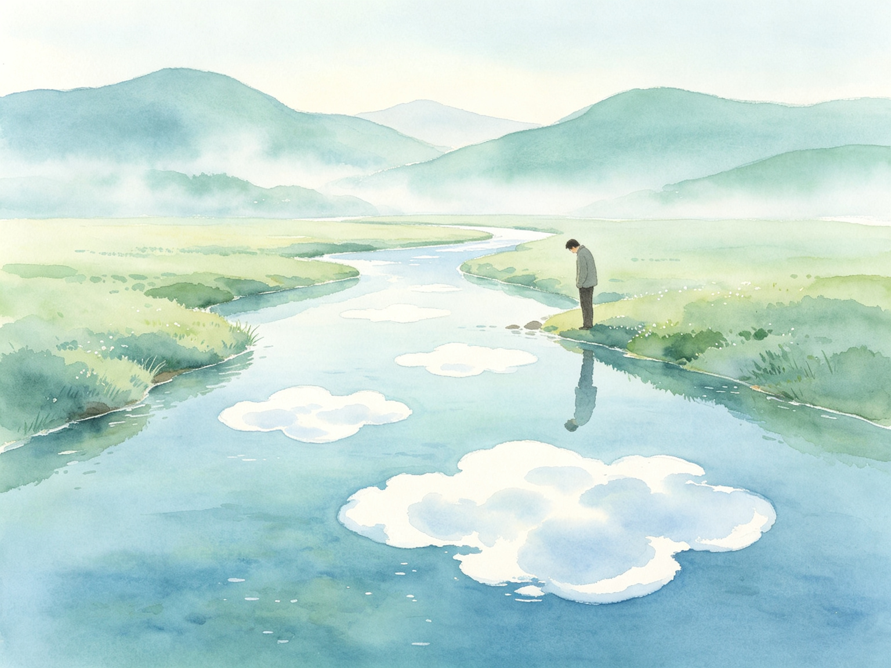
把注意力拉回当下，也能创造间隙：深刻地意识到当下这一刻，就是冥想的精髓。
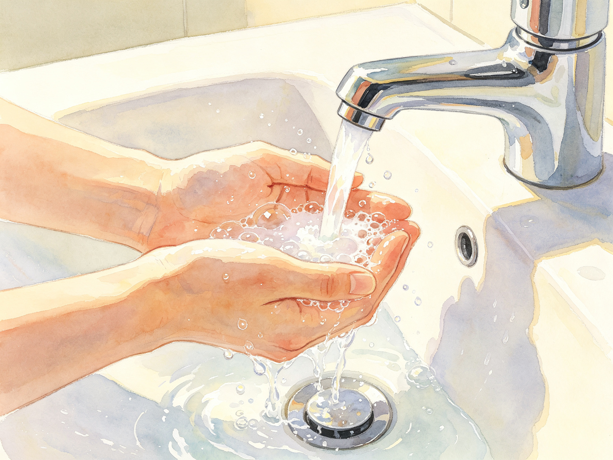
开悟之旅最重要的一步：学习不认同你的头脑。
有朝一日，你会像看到一个耍宝的孩子一样，对头脑里的声音莞尔一笑。
开悟：超越思想
难道思考不是在世界上求存的要件吗？
心智头脑是一件工具，任务完成就该搁下。
原书说：大多数人的思考，有百分之八十到九十，都是翻来覆去、一无是处的东西。
我们何以会上了思考的瘾？
因为你跟思考认同——你相信一停止思考，自己就不存在了。
这个由思考拼成的虚幻自我，原书叫它我执（ego）：它只能靠不断的思考苟存。
我执说：“有朝一日，等这个、那个发生，我就会快乐了。”
而真相是：只要你仍是心智头脑，就找不到当下这一刻。
所有真正的艺术家都知道：灵感来自一个无心的地方，来自内在宁静。
连最伟大的科学家，也都是在心理的寂静中，产生创造性的突破。
情绪：身体对心智的反应
情绪又是怎么回事？我陷在情绪里的时候，比陷在心智的时候多。
身体会给你最忠实的反映。审视情绪，最好是在身体里感觉它。
当思想与感受冲突时——思想是谎言，感受才是真理（关于你当下心智状态的真理）。
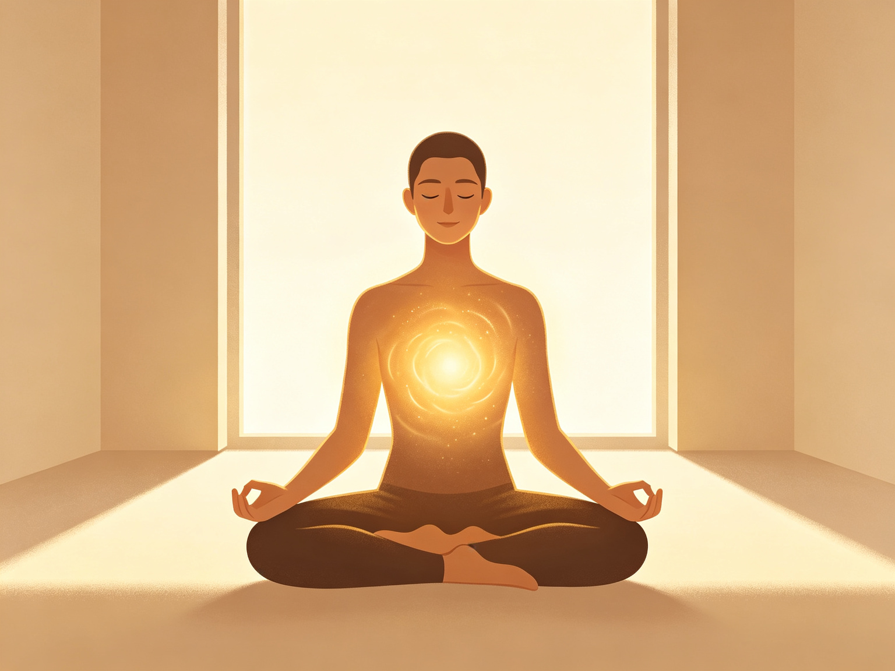
观察情绪，和观察思想一样：在不被它掌控的情况下，容许它存在。这时候的你，已经不再是这个情绪了。
感到烦躁、愤怒或低落时，先别急着反应。在心里轻轻问自己：
“这一刻，我的内在发生了什么事？”
不要分析，只是感觉。让情绪存在，你退后一步，成为看它的人。
情绪想要掌控你，而且通常会得逞——除非你有足够的临在。否则它暂时变成了“你”。
你的思考与情绪，常常彼此喂养：一个恶性循环。
真爱不会让你受苦。真正的喜悦，也不会变成痛苦。
佛陀说：痛苦源自欲望和渴求。所有的渴求，都是心智向外境寻求救赎——因为失去了存在的喜悦。
只要你与心智认同，就难逃痛苦的藩篱。停止制造眼前的痛，瓦解旧痛——这正是下一章要讲的。
读完第一章，测一测你真的"看见"了多少。5 题全对，点亮"第一章觉醒者"。
阅读、游戏、测验、练习都做到，你就是真正的"第一章觉醒者"。
本章小结 · 三点收获
- 你不是你的头脑。声音、思考、情绪都只是内容；你是那个能"看见"它们的存在。
- 观察，是唯一的钥匙。倾听思考、感觉情绪、把注意力放回当下——每个"心智流间隙"，都是一次小开悟。
- 超越不是失去，而是升级。开悟后你仍然会用脑，却不再被脑使用。
不要为当下创造新痛
没有人能完全免于痛苦。但十之八九的痛苦，是不必要的。
它是你那个没有被观察的心智，自编自导出来的。
心智为什么抗拒当下？因为它无法在没有"时间"的地方运作。
当下不愉快？——先接受，再行动。把当下当成盟友，而不是敌人。
一 · 痛苦之身：住进你体内的情绪怪兽
你心里住着一只"情绪怪兽"，由所有未被正视的负面情绪喂养长大。
平时它睡着。一句话、一个眼神，就能把它唤醒。
一旦它接管，你说的话、做的事，都不是你——是它在发作。
先点一个场景激活它，然后选择：认同（喂养）还是观察（不喂）。看看哪种做法让它熄灭。
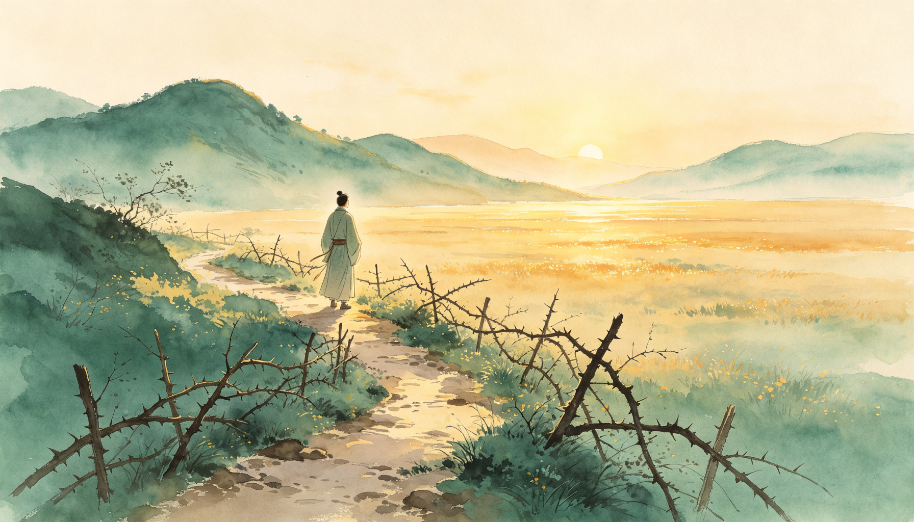
二 · 恐惧的起源
适量的恐惧是保护。心理恐惧却永远指向未来——它靠"明天"活着。
当下，是恐惧唯一进不来的地方。
三 · 小我的圆满追寻
小我感到匮乏，于是向外索取：肯定、财富、关系、身份。
要得越多，匮乏越深。圆满不在外面——停下来，它就在你里面。
不要在心智里寻找自我
心智的问题，无法在心智层面解决。你无法靠"思考"，走出思考。
窍门只有一个：终止时间的幻相。时间和心智狼狈为奸，一体不分。
把时间从心智里移除，它就停止了——除非你选择用它。
念头卡一张张飘来。当下＝此刻真实可感；心理时间＝懊悔过去或焦虑未来。选对，念头散开；选错，它缠住你。
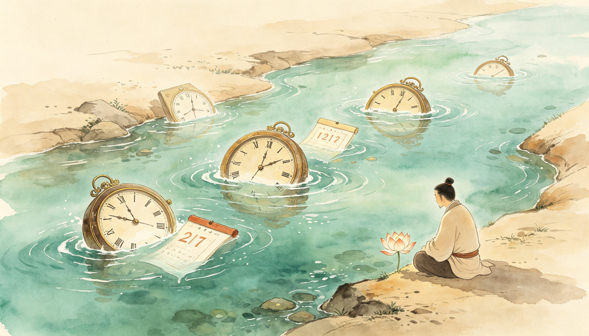
一 · 终止时间幻相
你可曾在当下之外，经验过任何事吗？过去只是回忆，未来只是投射。
苏菲派说："苏菲是当下之子。"鲁米说：过去和未来挡着我们，把它们付之一炬。
二 · 当下之外一无所有
心智无法知道树，它只知道关于树的资料。只有本体直接地知道。
当你领会的那一刻，意识就从时间转移到了临在——一切突然生机活现。
三 · 放掉心理时间
钟表时间可以用：安排约会、从过去学习、朝目标努力。它们都在当下完成。
心理时间才是牢笼：懊悔回不去的过去，焦虑还没到的未来。
时间里没有救赎。你只能在当下是自由的。
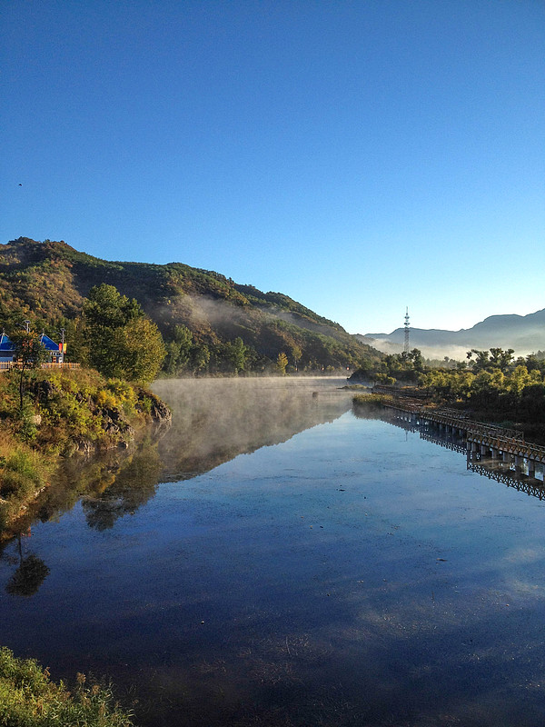
被念头淹没，还是照亮它？
心智像不肯睡觉的孩子：它不停地要"更刺激"。
无意识地活着，就是被心智掌控地活着。你以为是你在想，其实是它在想。
无意识有两个层面：一般无意识（习惯性认同念头）与深层无意识（痛苦之身，情绪爆发）。
念头一个个冒出来。点"觉察"，迷雾散开；放任不管，念头堆满屏幕——你就被无意识接管了。
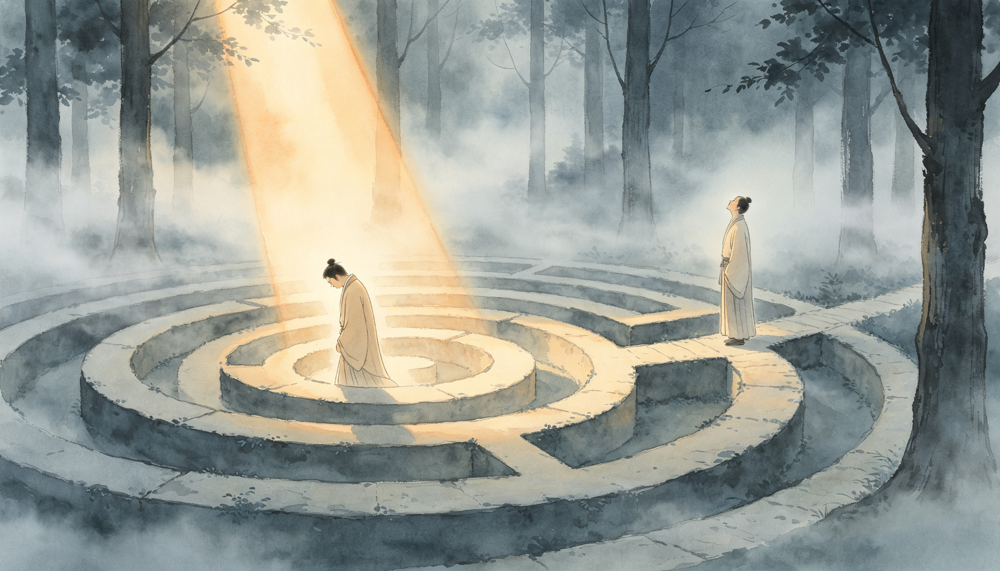
一 · 无意识的两个层面
一般无意识：认同念头，跟着它走。深层无意识：情绪能量爆发，你"变成了"它。
解决之道不是对抗，而是照亮——把注意力带进来。
二 · 瓦解一般无意识
养成自我观察的习惯：问自己"此刻我在想什么？"——这个"问"就是光。
观察念头，像在集市门口看人来人往。看，不等于跟进去买。
三 · 人生之旅的内在目的
外在目的会改变、会失败；内在目的永不失败——把当下活成唯一重要的时刻。
把注意力从"思考"移到"呼吸"上五秒，你已经把意识之光带了进来。
你见过一棵树吗？
头脑无法了解美。美，只在临在中发生。
树就在那里，却要你完全临在，才能真正"看见"它。
不是思考这棵树，而是让树的存在，进入你的存在。
同一幅画面，两种看法。心智模式给你标签与判断；临在模式让画面活起来。来回切换，感受差别。
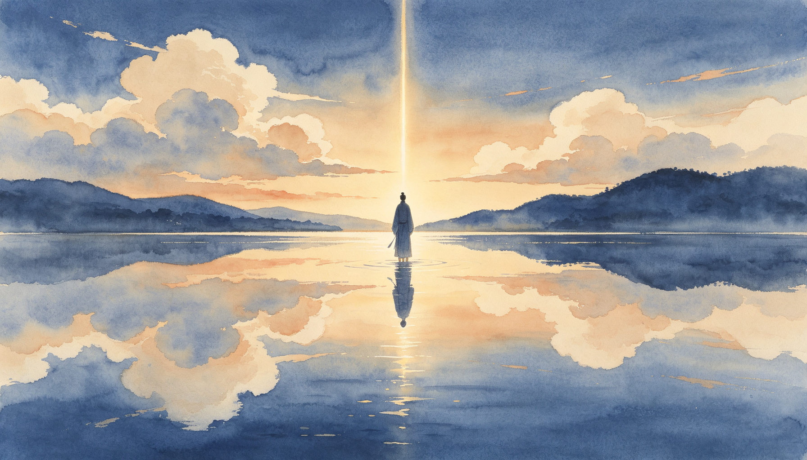
一 · 等待的奥秘
你在等待什么？等待"未来"——而未来永远不会来，来的只有当下。
在等待中保持临在：不焦虑结果，只感受此刻。等待，可以是深度的临在。
二 · 美在临在中发生
你命名一朵花，它就被概念化、被标签覆盖。
但当你临在，花的存在穿过概念，与你相遇。美不在花里，美在"看见"里。
三 · 体认纯意识
纯意识就是本体本身。你无法"想"出它，只能体验它。
把注意力从"我"移开，落在"此刻"——那一瞬，你就是临在。
身体是你通往本体的门
文字本身无法让你了解本体——文字只是路标，不是目的地。
身体不是念头所说的那个"它"。身体是你在物质世界的锚。
何时你最有力量？不是想得最清楚时，而是完全临在于身体时。
按顺序点亮每个部位：把注意力从念头里拿出来，放回身体。每点亮一处，能量就回来一点。
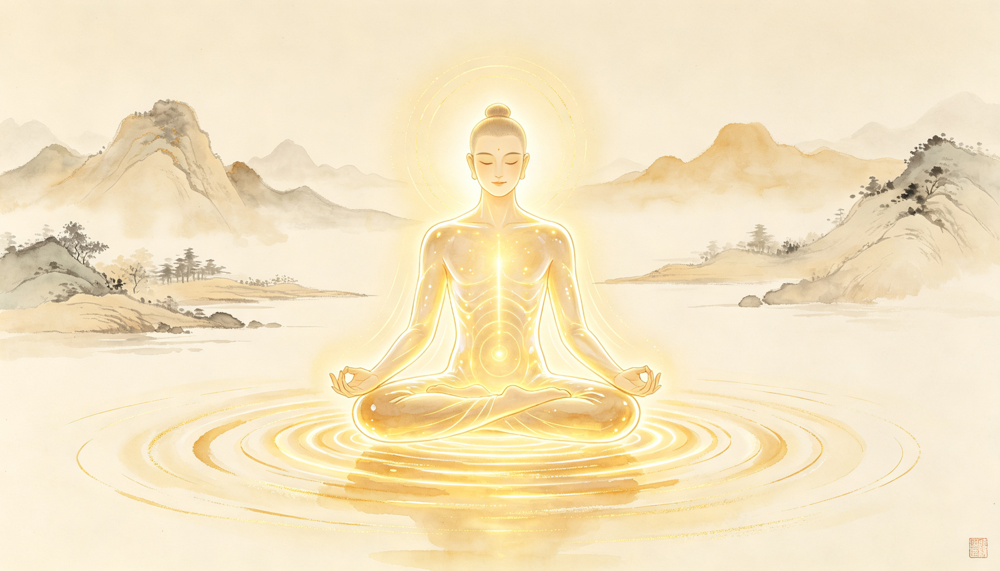
一 · 超越文字相
文字指向月亮，但它不是月亮。别把路标当成目的地。
真正要做的不是记住概念，而是去体验它。
二 · 与内在身体连接
闭上眼，感觉手心的能量、呼吸在体内的流动。那就是内在身体。
倾听身体内在的静默——那是你与本体之间最短的路。
三 · 身体实训
随时随地：走路时感受脚掌触地，喝水时感受水流过喉咙。
练习越频繁，你越不容易被念头带走。身体，是念头风暴里的避风港。
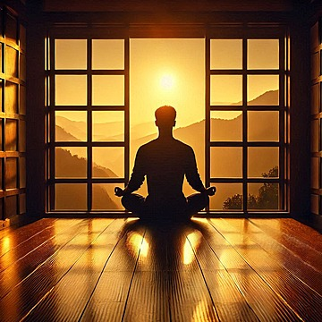
入口比你想的多
如果临在的入口不好找——别急，入口比你想的多。
冥想、静默、接纳：它们都是同一扇门的把手。
觉知到呼吸，就是最小的临在练习。每一次呼吸，都是一次回家。
念头会飘过。你什么都不用做——只要不伸手去抓它们。坚持 8 秒，房间就会静下来。
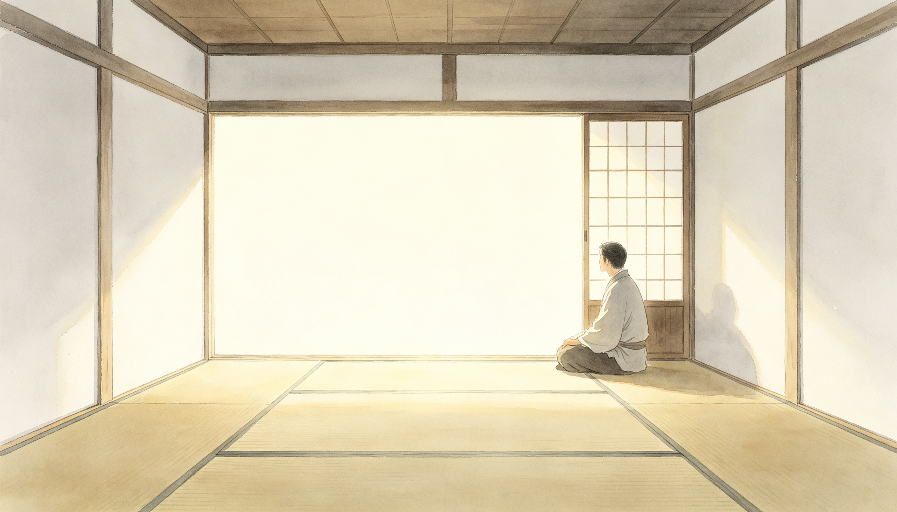
一 · 气场探源
把"我是谁"从名相中解开：你不是你的名字、经历与角色。
把自己视为纯意识，而不是短暂的名与形。
二 · 无梦之眠
深睡无梦时，你仍然"在"——那个知道"我睡得很好"的，就是本体。
入睡前，臣服于寂静。那是离本体最近的日常状态。
三 · 其他入口
静默、空间、接纳、甚至死亡——凡让你放下"我执"的，都是门。
每次深睡、每次昏厥，都是一次"小死"的提醒：你不依赖念头而存在。
爱不是修补，是照见
亲密关系不是用来"修补你"的。它是一面镜子，照出你内在的坑洞。
你无法在另一个人身上找到圆满——圆满先在自己里面，才能在关系里流动。
真正的爱不占有、不抓取，它让彼此自由地临在。
伴侣开口了。你的回应决定这面镜子是照亮你，还是照出小我。选 6 个场景试试。
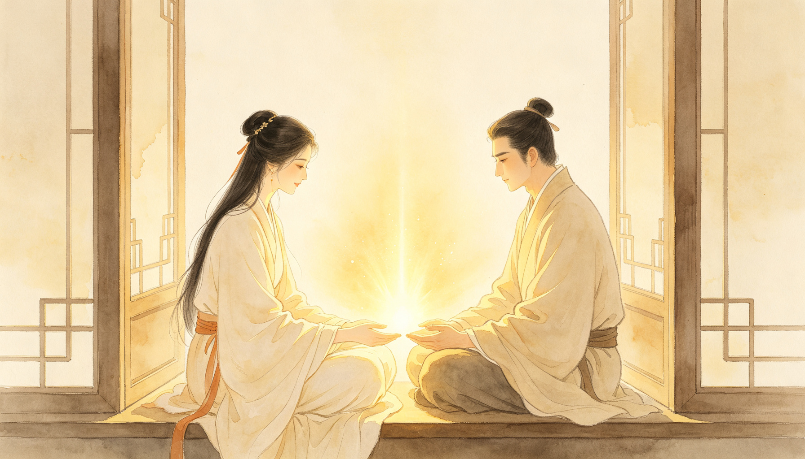
一 · 爱／恨关系
爱与恨是同一枚硬币——都带着"他应该让我完整"的执念。
期待一旦落空，爱就翻面成恨。翻转的，不是爱，是瘾。
二 · 瘾头与圆满
把伴侣当成圆满的来源，是最大的瘾。上瘾，永远饥饿。
先在自己之内找到圆满，关系才能从"索取"变成"分享"。
三 · 在亲密关系中灵修
冲突时刻正是练习场：看见自己的反应，选择临在。
停止评判"他应该怎样"——从审判席上下来，你们才都自由。
快乐与不快乐，是一枚硬币
快乐与不快乐是一枚硬币的两面。执着于一面，另一面就会翻上来。
万物都有周期：上升与下沉、得与失。对抗循环，就是对抗生命。
慈悲：看见他人痛苦而不评判——慈悲是"我也是"的觉知。
每件事都会流过去——好的坏的都一样。试试放手 8 件，看看不执着是什么滋味。
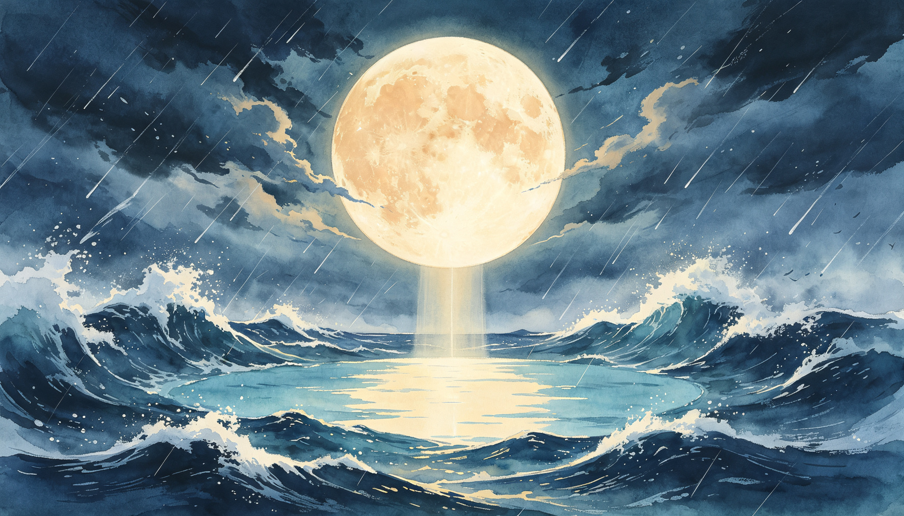
一 · 超越好与坏的善
好与坏是头脑贴的标签。当下只有"发生"，和你的"回应"。
当你停止给事件贴标签，一件"坏事"里，反而常常藏着礼物。
二 · 无常和生命循环
春天会来，也会走。你不抗拒冬天，才不辜负春天。
循环不是惩罚，是生命的呼吸。你顺着它，就站在了潮头。
三 · 慈悲的本质
慈悲不是居高临下的拯救，是承认"我们都在同一艘船上"。
看见自己的脆弱，才看得见别人的脆弱。那是慈悲的地基。
臣服，是最高级的顺流
臣服不是认命，是停止无用的内在抵抗。它是力量，不是软弱。
臣服于"本然"：不抵抗当下，然后采取行动。先接纳，回应才有力。
你无法控制风，但你可以调整帆。
每件事都是河上的浪。逆流硬顶，船会晃；顺着走，船自然到岸。8 次顺流，抵达对岸。
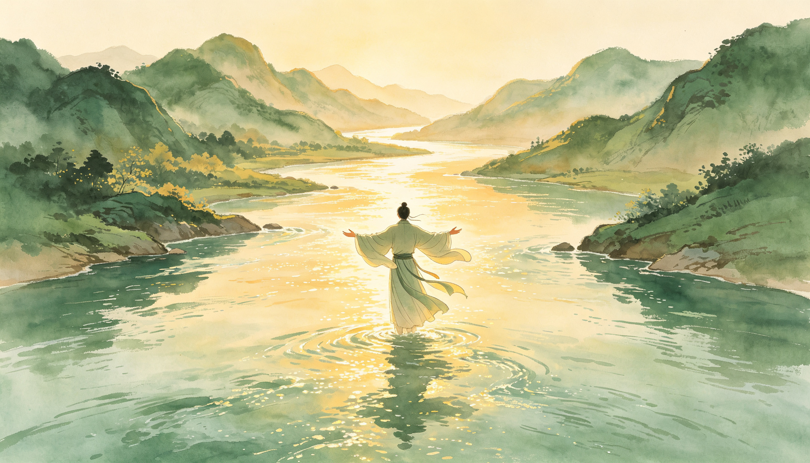
一 · 接纳当下
接受"此时此地"的事实——不是接受一辈子如此，只是接受此刻如此。
接纳之后，行动才有力量；抗拒之中，行动全是乱撞。
二 · 人际关系中的臣服
不把别人改造成"应该的样子"。先接纳他此刻的样子，回应才可能真正有效。
臣服不是让步，是放下"必须赢"的执念。
三 · 转受苦为和平
痛苦 × 抗拒 = 苦难。把抗拒拿掉，痛就只是痛，并且会自己过去。
你不必喜欢当下的一切，但你可以不与它作战——那是和平的开始。